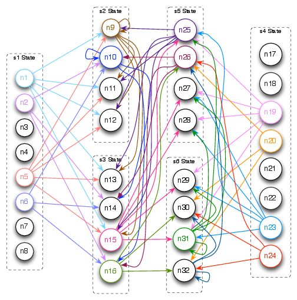
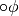

Model Checking Graph¶
This module contains the necessary functions to generate a model checking graph.
-
tccMChecker.model_checking_graph.delete_atoms(atoms, index_list)[source]¶ Removes atoms from a list of atoms.
Parameters: - atoms (List of lists) – List of atoms.
- index_list (List) – Index list of the elements to be removed.
Returns: List of atoms with atoms removed.
Return type: List.
Example: >>> from tccMChecker.closure import * >>> from tccMChecker.model_checking_graph import * >>> phi = Formula({"<>": {"^":{"":"in=true","~":{"o":"x=2"}}}}) >>> closure = [] >>> get_closure(phi,closure) >>> atoms = get_all_atoms(closure) >>> len(atoms) 16 >>> newAtoms = delete_atoms(atoms,[0,2,3,4,5,6,7,8,9,10,11,12,14,15]) >>> len(newAtoms) 2
See also
closure.getClosure(),formula.Formula,getAllAtoms()
-
tccMChecker.model_checking_graph.get_all_atoms(closure)[source]¶ Returns all possible atoms of the closure.
Parameters: closure (List of Formula) – Closure of a formula.Returns: List of all atoms of the closure. Return type: List of lists of Formula.Example: >>> from tccMChecker.closure import * >>> from tccMChecker.model_checking_graph import * >>> phi = Formula({"<>": {"^":{"":"in=true","~":{"o":"x=2"}}}}) >>> closure = [] >>> get_closure(phi,closure) >>> atoms = get_all_atoms(closure) >>> for index, atom in enumerate(atoms): ... print("Atom " + str(index) + ":") ... for formula in atom: ... print(formula.get_formula()) ... Atom 0: {'o': {'<>': {'^': {'': 'in=true', '~': {'o': 'x=2'}}}}} {'': 'in=true'} {'o': 'x=2'} {'': 'x=2'} {'<>': {'^': {'': 'in=true', '~': {'o': 'x=2'}}}} {'~': {'^': {'': 'in=true', '~': {'o': 'x=2'}}}} Atom 1: {'~': {'o': {'<>': {'^': {'': 'in=true', '~': {'o': 'x=2'}}}}}} {'': 'in=true'} {'o': 'x=2'} {'': 'x=2'} {'o': {'~': {'<>': {'^': {'': 'in=true', '~': {'o': 'x=2'}}}}}} {'~': {'<>': {'^': {'': 'in=true', '~': {'o': 'x=2'}}}}} {'~': {'^': {'': 'in=true', '~': {'o': 'x=2'}}}} ...
See also
closure.getClosure(),formula.FormulaNote
This function is based on the algorithm shown in [MP95].
-
tccMChecker.model_checking_graph.get_basic_formulas(closure)[source]¶ Returns the basic formulas (i.e. propositions or formulas with
 as main connective) of the closure.
as main connective) of the closure.Parameters: closure (List of Formula) – Closure of a formula.Returns: List of basic formulas of the closure. Return type: List of Formula.Example: >>> from tccMChecker.closure import * >>> from tccMChecker.model_checking_graph import * >>> phi = Formula({"<>": {"^":{"":"in=true","~":{"o":"x=2"}}}}) >>> closure = [] >>> get_closure(phi,closure) >>> basic_formulas = get_basic_formulas(closure) >>> for formula in basic_formulas: ... print(formula.get_formula()) ... {'o': {'<>': {'^': {'': 'in=true', '~': {'o': 'x=2'}}}}} {'': 'in=true'} {'o': 'x=2'} {'': 'x=2'}
See also
closure.getClosure(),formula.Formula
-
tccMChecker.model_checking_graph.get_model_checking__graph(tcc_structure, model_checking_atoms)[source]¶ Returns the model checking graph
Parameters: - tcc_structure (Dictionary) – Structure representing the behavior of a system.
- model_checking_atoms (Dictionary) – Atoms of a tcc structure.
Returns: Structure representing the model checking graph.
Return type: Dictionary
Example: >>> from tccMChecker.model_checking_graph import * >>> from tccMChecker.closure import * >>> tcc_structure = { ... 1: {"store": [Formula({"":"in=true"})], "normal": [], "temporal": ["t4","p9"], "edges": [2,3], "initial": True}, ... 2: {"store": [Formula({"": "x=2"}),Formula({"": "in=true"})], "normal": [], "temporal": ["t4","p9"], "edges": [2,3], "initial": False}, ... 3: {"store": [Formula({"": "x=2"}),Formula({"~": "in=true"})], "normal": ["now2"], "temporal": ["t7","p9"], "edges": [5,6], "initial": False}, ... 4: {"store": [Formula({"~": "in=true"})], "normal": ["now2"], "temporal": ["t7","p9"], "edges": [5,6], "initial": True}, ... 5: {"store": [Formula({"": "x=1"}),Formula({"": "in=true"})], "normal": [], "temporal": ["t4","p9"], "edges": [2,3], "initial": False}, ... 6: {"store": [Formula({"": "x=1"}),Formula({"~": "in=true"})], "normal": ["now2"], "temporal": ["t7","p9"], "edges": [5,6], "initial": False} ... } >>> phi = Formula({"<>": {"^":{"":"in=true","~":{"o":"x=2"}}}}) >>> closure = [] >>> get_closure(phi,closure) >>> atoms = get_all_atoms(closure) >>> model_checking_atoms = get_model_checking_atoms(tcc_structure,atoms) >>> get_model_checking__graph(tcc_structure, model_checking_atoms) {1: [9, 11, 12, 13, 15], 2: [10, 16, 14], 3: [], 4: [], 5: [9, 11, 12, 13, 15], 6: [10, 16, 14], 7: [], 8: [], 9: [9, 11, 12, 13, 15], 10: [10, 16, 14], 11: [], 12: [], 13: [], 14: [], 15: [25, 27, 28, 29, 31], 16: [26, 32, 30], 17: [], 18: [], 19: [25, 27, 28, 29, 31], 20: [26, 32, 30], 21: [], 22: [], 23: [25, 27, 28, 29, 31], 24: [26, 32, 30], 25: [9, 11, 12, 13, 15], 26: [10, 16, 14], 27: [], 28: [], 29: [], 30: [], 31: [25, 27, 28, 29, 31], 32: [26, 32, 30]}
Model checking graph generated.
See also
closure.getClosure(),formula.Formula,getAllAtoms()
{kind=link}
-
tccMChecker.model_checking_graph.get_model_checking_atoms(tcc_structure, atoms)[source]¶ Returns the atoms corresponding to the states of a tcc structure.
Parameters: - tcc_structure (Dictionary) – Structure representing the behaviour of a system.
- atoms (List of atoms) – List of all possible atoms of closure.
Returns: Dictionary that have the states of a tcc structure as keys, and a list of consistent atoms as values.
Return type: Dictionary
Example: >>> from tccMChecker.model_checking_graph import * >>> from tccMChecker.closure import * >>> tcc_structure = { ... 1: {"store": [Formula({"":"in=true"})], "normal": [], "temporal": ["t4","p9"], "edges": [2,3], "initial": True}, ... 2: {"store": [Formula({"": "x=2"}),Formula({"": "in=true"})], "normal": [], "temporal": ["t4","p9"], "edges": [2,3], "initial": False}, ... 3: {"store": [Formula({"": "x=2"}),Formula({"~": "in=true"})], "normal": ["now2"], "temporal": ["t7","p9"], "edges": [5,6], "initial": False}, ... 4: {"store": [Formula({"~": "in=true"})], "normal": ["now2"], "temporal": ["t7","p9"], "edges": [5,6], "initial": True}, ... 5: {"store": [Formula({"": "x=1"}),Formula({"": "in=true"})], "normal": [], "temporal": ["t4","p9"], "edges": [2,3], "initial": False}, ... 6: {"store": [Formula({"": "x=1"}),Formula({"~": "in=true"})], "normal": ["now2"], "temporal": ["t7","p9"], "edges": [5,6], "initial": False} ... } >>> phi = Formula({"<>": {"^":{"":"in=true","~":{"o":"x=2"}}}}) >>> closure = [] >>> get_closure(phi,closure) >>> atoms = get_all_atoms(closure) >>> model_checking_atoms = get_model_checking_atoms(tcc_structure,atoms) >>> for tcc_node in model_checking_atoms.keys(): ... print("tcc State", tcc_node) ... tcc_atoms = model_checking_atoms.get(tcc_node) ... for atom_index in tcc_atoms.keys(): ... print("Atom ", atom_index) ... for formula in tcc_atoms.get(atom_index): ... (formula.get_formula(), " | ",) ... print("\n") tcc State 1 Atom 1 {'o': {'<>': {'^': {'': 'in=true', '~': {'o': 'x=2'}}}}} | {'': 'in=true'} | {'o': 'x=2'} | {'': 'x=2'} | {'<>': {'^': {'': 'in=true', '~': {'o': 'x=2'}}}} | {'~': {'^': {'': 'in=true', '~': {'o': 'x=2'}}}} | Atom 2 {'~': {'o': {'<>': {'^': {'': 'in=true', '~': {'o': 'x=2'}}}}}} | {'': 'in=true'} | {'o': 'x=2'} | {'': 'x=2'} | {'o': {'~': {'<>': {'^': {'': 'in=true', '~': {'o': 'x=2'}}}}}} | {'~': {'<>': {'^': {'': 'in=true', '~': {'o': 'x=2'}}}}} | {'~': {'^': {'': 'in=true', '~': {'o': 'x=2'}}}} |
See also
closure.getClosure(),formula.Formula,getAllAtoms()
-
tccMChecker.model_checking_graph.get_no_basic_formulas(closure)[source]¶ Returns the formulas of the closure that are not basic formulas.
Parameters: closure (List of Formula) – Closure of a formula.Returns: List of formulas of the closure that are not basic formulas. Return type: List of Formula.Example: >>> from tccMChecker.closure import * >>> from tccMChecker.model_checking_graph import * >>> phi = Formula({"<>": {"^":{"":"in=true","~":{"o":"x=2"}}}}) >>> closure = [] >>> get_closure(phi,closure) >>> noBasicFormulas = get_no_basic_formulas(closure) >>> for formula in noBasicFormulas: ... print(formula.get_formula()) ... {'<>': {'^': {'': 'in=true', '~': {'o': 'x=2'}}}} {'^': {'': 'in=true', '~': {'o': 'x=2'}}}
See also
closure.getClosure(),formula.Formula
-
tccMChecker.model_checking_graph.get_total_nodes(graph)[source]¶ Returns the total number of atoms.
Parameters: graph (Dictionary) – Dictionary representing the atoms in each tcc state. Returns: The total number of atoms. Return type: Integer Example: >>> from tccMChecker.model_checking_graph import * >>>> graph = {1: [[Formula({'': 'in=true'}), Formula({'o': 'x=2'})], ... [Formula({'~': {'^': {'': 'in=true', '~': {'o': 'x=2'}}}})]], ... 2: [[Formula({'~': 'in=true'}),Formula({'~': {'o': 'x=2'}})]]} >>> get_total_nodes(graph) 3
See also
formula.Formula
-
tccMChecker.model_checking_graph.is_consistent(formula, atom)[source]¶ Checks if a formula is consistent with the set of formulas in an atom.
Parameters: - formula (
Formula) – Formula - atom (List of
Formula.) – List of consistent formulas representing an atom of the closure.
Returns: Trueif the formula is consistent with the set of formulas in the atom orFalseotherwise.Return type: Boolean
Example: >>> from tccMChecker.closure import * >>> from tccMChecker.model_checking_graph import * >>> phi = Formula({"<>": {"^":{"":"in=true","~":{"o":"x=2"}}}}) >>> closure = [] >>> get_closure(phi,closure) >>> atoms = get_all_atoms(closure) >>> is_consistent(Formula({'': 'x=1'}), atoms[0]) False
See also
closure.getClosure(),formula.Formula,getAllAtoms()Note
This function is based on the conditions shown in the definition 6.1 of the thesis document.
- formula (
-
tccMChecker.model_checking_graph.is_in_atom(formula, atom)[source]¶ Checks if a formula is in an atom.
Parameters: - formula (Dictionary) – Structure representing a formula.
- atom (List of
Formula.) – List of consistent formulas representing an atom of the closure.
Returns: Trueif the formula is in atom orFalseotherwise.Return type: Boolean
Example: >>> from tccMChecker.closure import * >>> from tccMChecker.model_checking_graph import * >>> phi = Formula({"<>": {"^":{"":"in=true","~":{"o":"x=2"}}}}) >>> closure = [] >>> get_closure(phi,closure) >>> atoms = get_all_atoms(closure) >>> is_in_atom({'': 'in=true'}, atoms[0]) True
See also
closure.getClosure(),formula.Formula,getAllAtoms()
-
tccMChecker.model_checking_graph.is_next_state(next_formulas, next_atom)[source]¶ Checks if an atom satisfies a list of formulas with next operator as main connective.
Parameters: - next_formulas (List of
Formula) – List of formulas with next operator as main connective. - next_atom (List of
Formula) – Atom.
Returns: Trueif the atom satisfies the temporal formulas orFalseotherwise.Return type: Boolean
Example: >>> from tccMChecker.model_checking_graph import * >>> atom = [Formula({'o': {'<>': {'^': {'': 'in=true', '~': {'o': 'x=2'}}}}}), ... Formula({'': 'in=true'}), Formula({'o': 'x=2'}), Formula({'': 'x=2'}), ... Formula({'<>': {'^': {'': 'in=true', '~': {'o': 'x=2'}}}}), ... Formula({'~': {'^': {'': 'in=true', '~': {'o': 'x=2'}}}})] >>> >>> formulas = [Formula({'o': 'x=2'})] >>> is_next_state(formulas,atom) True
Note
We say that an atom satisfies a list of formulas when for all the formulas  in the list we found a formula
 in the atom.
in the atom.See also
formula.Formula- next_formulas (List of
-
tccMChecker.model_checking_graph.list2dict(lists, offset)[source]¶ Converts a list to a dictionary with ascending numbers as keys.
Parameters: - lists (List) – List with elements.
- offset (Integer) – Offset of numeration.
Returns: Dictionary with numbers as keys, and elements of the list as values.
Return type: Dictionary.
Example: >>> from tccMChecker.model_checking_graph import * >>> list = ["I", "Love", "Computer", "Science"] >>> list2dict(list, 2) {2: 'I', 3: 'Love', 4: 'Computer', 5: 'Science'}
-
tccMChecker.model_checking_graph.proposition_consistent(formula, atom)[source]¶ Checks if a proposition is consistent with the formulas of an atom.
Parameters: - formula (
Formula) – Formula - atom (List of
Formula) – Atom
Returns: Trueif the proposition is consistent with the atom orFalseotherwise.Return type: Boolean.
Example: >>> from tccMChecker.closure import * >>> from tccMChecker.model_checking_graph import * >>> phi = Formula({"<>": {"^":{"":"in=true","~":{"o":"x=2"}}}}) >>> closure = [] >>> get_closure(phi,closure) >>> atoms = get_all_atoms(closure) >>> proposition = Formula({"~":"x=2"}) >>> atom = atoms[0] >>> for formula in atom: ... print(formula.get_formula()) ... {'o': {'<>': {'^': {'': 'in=true', '~': {'o': 'x=2'}}}}} {'': 'in=true'} {'o': 'x=2'} {'': 'x=2'} {'<>': {'^': {'': 'in=true', '~': {'o': 'x=2'}}}} {'~': {'^': {'': 'in=true', '~': {'o': 'x=2'}}}} >>> proposition_consistent(proposition, atom) False
See also
closure.getClosure(),formula.Formula,getAllAtoms()- formula (
-
tccMChecker.model_checking_graph.search_formulas(formulas, connective)[source]¶ Returns the formulas that have a particular main connective.
Parameters: - formulas (List of
Formula) – List of formulas. - connective (String) – The main connective.
Returns: List containing the formulas that have the main connective.
Return type: List
Example: >>> from tccMChecker.model_checking_graph import * >>> list = [Formula({'o': 'x=2'}), Formula({'~': {'o': 'x=2'}}), Formula({'o': {'~': 'x=2'}})] >>> result = search_formulas(list,'o') >>> for formula in result: ... print(formula.get_formula()) ... {'o': 'x=2'} {'o': {'~': 'x=2'}}
- formulas (List of
| [MP95] | Zohar Manna and Amir Pnueli. Temporal Verification of Reactive Systems: Safety. Springer-Verlag New York, Inc., 1995. |